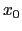
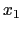

The objective of (OS) is to provide a set of standards for representing optimization instances, results, solver options, and communication between clients and solvers in a distributed environment using Web Services. These standards are specified by W3C XSD schemas. The schemas for the OS project are contained in the schemas folder under the OS root. There are numerous schemas in this directory that are part of the OS standard. For a full description of all the schemas see Ma [4]. We briefly discuss the standards most relevant to the current version of the OS project.
OSiL stores optimization problem instances as XML files. Consider the following problem instance that is a modification of an example of Rosenbrock [5]:
There are two continuous variables,  and , in this instance, each with a lower bound of 0. Figure 4 shows how we represent this information in an XML-based OSiL file. Like all XML files, this is a text file that contains both markup and data. In this case there are two types of markup, elements (or tags) and attributes that describe the elements. Specifically, there are a <variables> element and two <var> elements. Each <var> element has attributes lb, name, and type that describe properties of a decision variable: its lower bound, ``name'', and domain type (continuous, binary, general integer).
To be useful for communication between solvers and modeling languages, OSiL instance files must conform to a standard. An XML-based representation standard is imposed through the use of a W3C XML Schema. The W3C, or World Wide Web Consortium (www.w3.org), promotes standards for the evolution of the web and for interoperability between web products. XML Schema (www.w3.org/XML/Schema) is one such standard. A schema specifies the elements and attributes that define a specific XML vocabulary. The W3C XML Schema is thus a schema for schemas; it specifies the elements and attributes for a schema that in turn specifies elements and attributes for an XML vocabulary such as OSiL. An XML file that conforms to a schema is called valid for that schema.
By analogy to object-oriented programming, a schema is akin to a header file in C++ that defines the members and methods in a class. Just as a class in C++ very explicitly describes member and method names and properties, a schema explicitly describes element and attribute names and properties.
Figure 5 is a piece of our schema for OSiL. In W3C XML Schema jargon, it defines a complexType, whose purpose is to specify elements and attributes that are allowed to appear in a valid XML instance file such as the one excerpted in Figure 4. In particular, Figure 5 defines the complexType named Variables, which comprises an element named <var> and an attribute named numberOfVariables. The numberOfVariables attribute is of a standard type positiveInteger, whereas the <var> element is a user-defined complexType named Variable. Thus the complexType Variables contains a sequence of <var> elements that are of complexType Variable. OSiL's schema must also provide a specification for the Variable complexType, which is shown in Figure 6.
In OSiL the linear part of the problem is stored in the <linearConstraintCoefficients> element, which stores the coefficient matrix using three arrays as proposed in the earlier LPFML schema [2]. There is a child element of <linearConstraintCoefficients> to represent each array: <value> for an array of nonzero coefficients, <rowIdx> or <colIdx> for a corresponding array of row indices or column indices, and <start> for an array that indicates where each row or column begins in the previous two arrays.
The quadratic part of the problem is represented in Figure 2.
The nonlinear part of the problem is given in Figure 9.
The complete OSiL representation is given in the Appendix (Section 14.2).
<?xml version="1.0" encoding="UTF-8"?>
<?xml-stylesheet type = "text/xsl"
href = "/Users/kmartin/Documents/files/code/cpp/OScpp/COIN-OSX/OS/stylesheets/OSrL.xslt"?>
<osrl xmlns="os.optimizationservices.org"
xmlns:xsi="http://www.w3.org/2001/XMLSchema-instance"
xsi:schemaLocation="os.optimizationservices.org
http://www.optimizationservices.org/schemas/OSrL.xsd">
<resultHeader>
<generalStatus type="success"/>
<serviceName>Solved using a LINDO service</serviceName>
<instanceName>Modified Rosenbrock</instanceName>
</resultHeader>
<resultData>
<optimization numberOfSolutions="1" numberOfVariables="2" numberOfConstraints="2"
numberOfObjectives="1">
<solution objectiveIdx="-1">
<status type="optimal"/>
<variables>
<values>
<var idx="0">0.87243</var>
<var idx="1">0.741417</var>
</values>
<other name="reduced costs" description="the variable reduced costs">
<var idx="0">-4.06909e-08</var>
<var idx="1">0</var>
</other>
</variables>
<objectives>
<values>
<obj idx="-1">6.7279</obj>
</values>
</objectives>
<constraints>
<dualValues>
<con idx="0">0</con>
<con idx="1">0.766294</con>
</dualValues>
</constraints>
</solution>
</optimization>